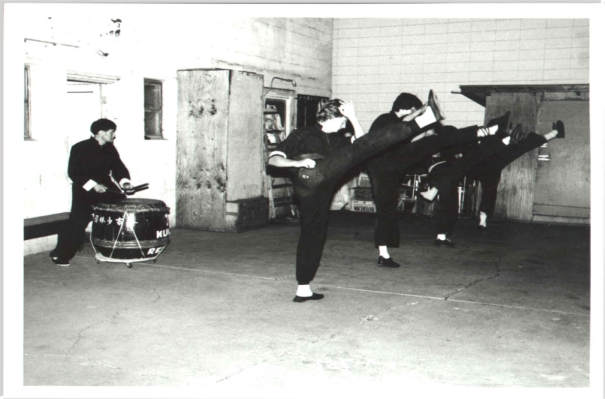

Kung Fu
"When you are talking about Kung Fu, you are talking about two branches: the 'opera art' and the 'fighting art'. Fighting can be used to improve your self-confidence. If you only train in the 'opera art' or some non-contact form, to build your confidence, it might be a false confidence. Once you try to use it, you will find that the 'opera forms' don't work."
Joe Chu is an enigma among traditional Kung Fu Sifu.